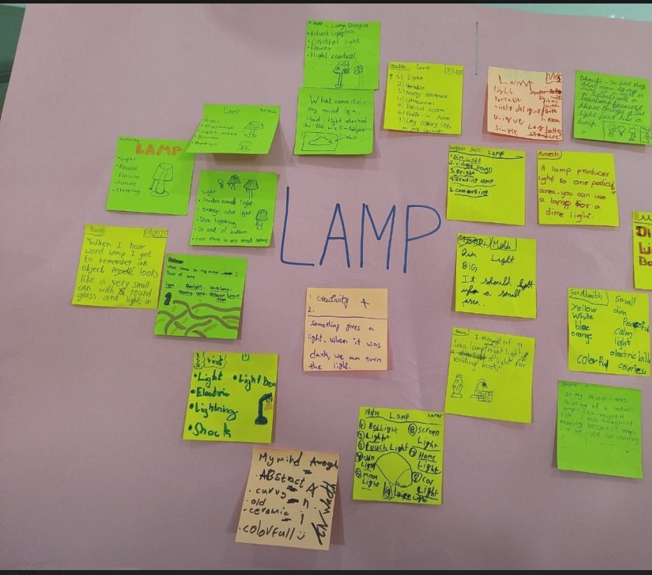

The situation
"The mind of a child is a wellspring of untapped potential, brimming with insights that often escape even the most seasoned thinkers." This thought stayed with me after a brainstorming session as my students began a new design unit. Their task was to design a functional lamp from scratch, following the IB Design Cycle.
What I tried
I opened the unit with an open brainstorm instead of a lecture. Ideas went onto sticky notes around the word LAMP and onto the whiteboard.
What happened
What unfolded was nothing short of extraordinary. The ideas were raw, innovative and insightful, and they left me asking a question: why do we, as teachers, sometimes claim to be the sole authority on knowledge?
What I learned
Every child enters the learning space with unique ideas and untapped potential. When we create chances to build on what they already know, we nurture their skills and their confidence. We do not just teach; we learn, grow and co-create.
